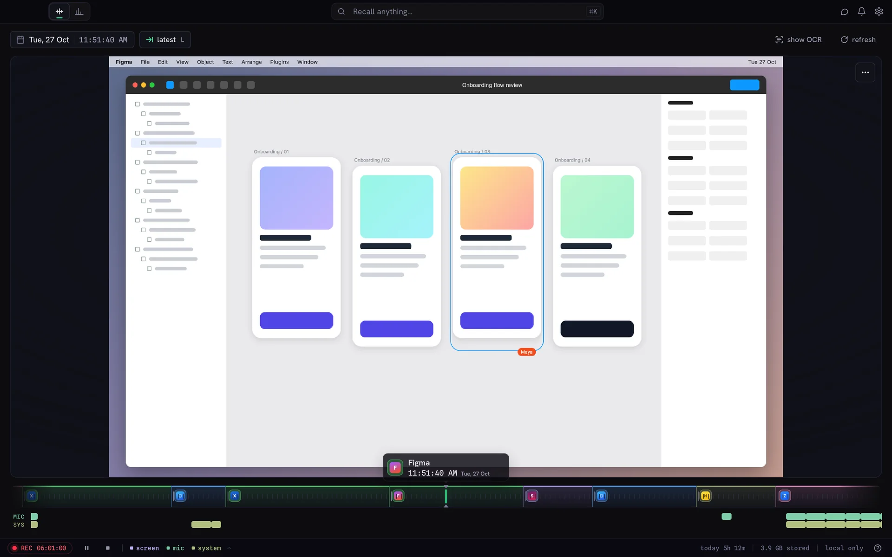
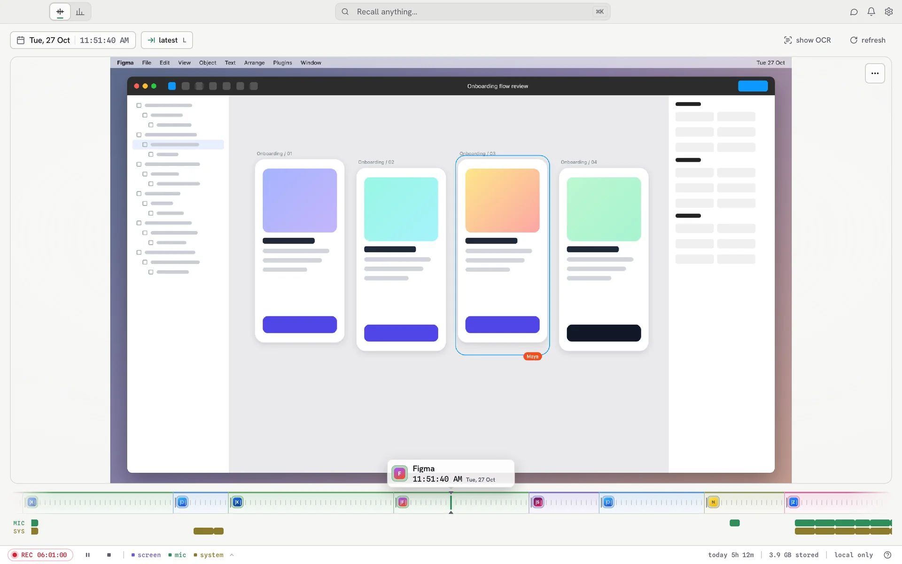
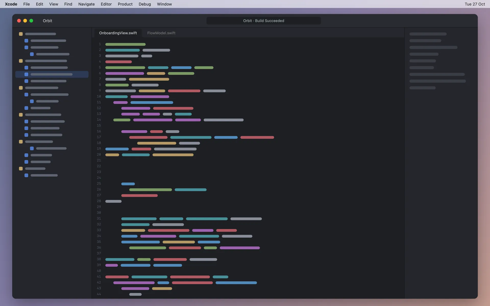
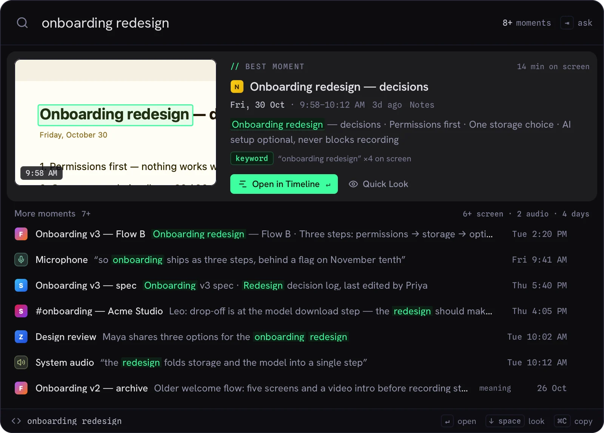
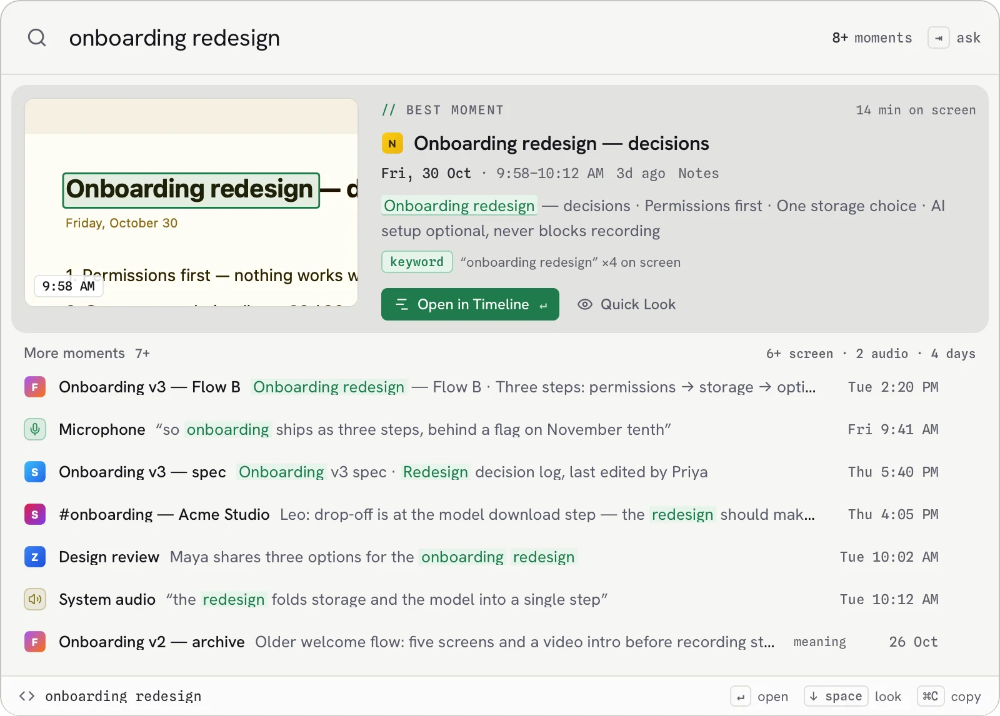
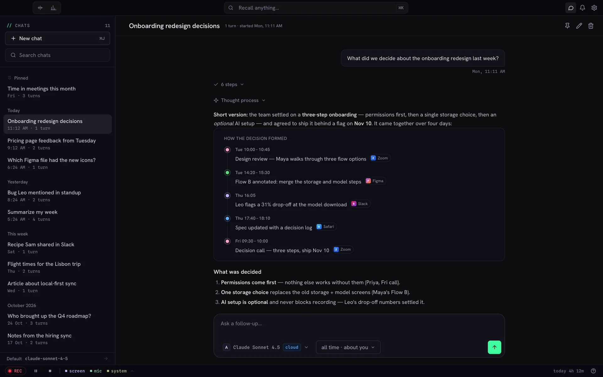
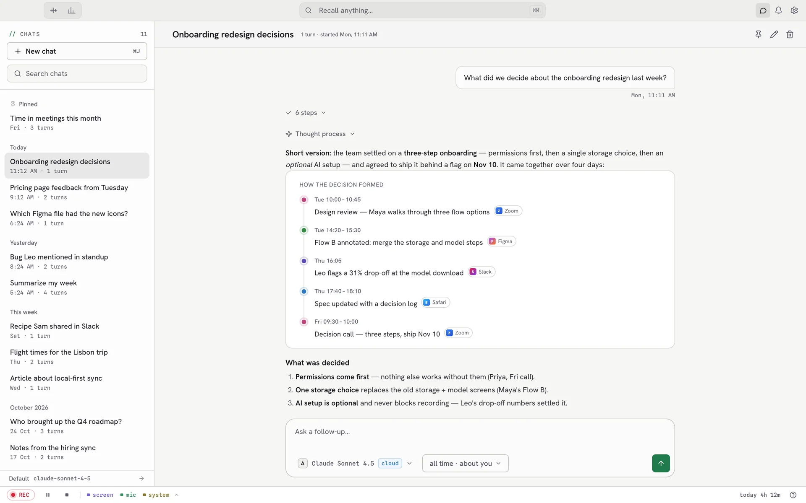
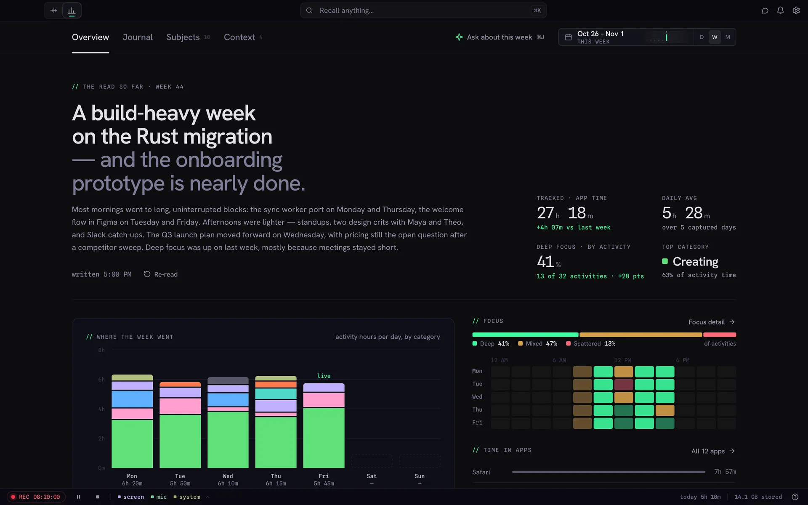
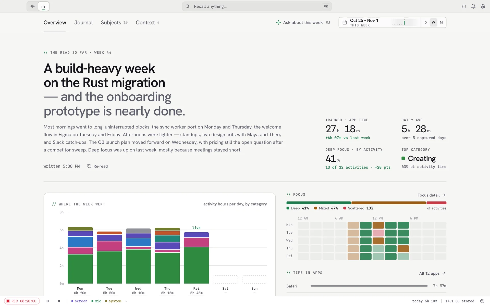

Everything you've seen, heard and done. Findable.
Mnema quietly records your screen and audio, then lets you search it, scrub back to any moment, and ask about your own past. All of it stays on your Mac.


It records
Screen, what you hear and what you say. It pauses when you step away, and you can hide any app.
You recall
Find any moment by what was on screen, what was said, or which app you were in.
It reasons
Ask plain questions about your past and get answers that point to where they came from.
Find the one moment in a year of them.
Scrub your day like a video. Every frame keeps its words, every conversation keeps its speakers, so the moment you half-remember is a search away.
- Screen
- Every window becomes searchable text.
- Audio
- Meetings and calls, transcribed with who said what.
- Activity
- Which app, which page, for how long.



Ask your own memory a question.
Ask the way you'd ask a colleague who never forgets. Answers come from your own history, and every claim links to the moment it came from.
- Receipts
- Jump from any answer to the exact frame or clip.
- Threads
- Follow up, refine, come back tomorrow.
- Your model
- Your ChatGPT plan, your own key, or a local model.


See where your week actually went.
Mnema builds a quiet picture of how you work: the projects you're deep in, where focus goes, and what you keep coming back to. Yours to read, correct, or wipe.
- Time
- By app, by category, by focus.
- Subjects
- The threads you keep returning to.
- Control
- Pin what rings true. Dismiss what doesn't.


It all stays on your machine.
Recording, reading your screen, transcribing and search run on your Mac. There's no Mnema cloud to send anything to. AI answers use the provider you pick, or a model that runs locally.
local only
- Stays on your Mac
- No account, no Mnema cloud, no telemetry.
- Secrets redacted
- Passwords, keys and card numbers are stripped from searchable text.
- Encrypted at rest
- Your record is encrypted on disk.
- You choose what's kept
- Forever, or auto-delete after 7, 14 or 30 days.
- Delete in one click
- Wipe the last few minutes, or everything the AI learned about you.
- Hide any app
- Exclude apps from recording, or pause any time.
Stop forgetting. Start recalling.
Try it free for 30 days. No account, no card. Then $69 once, with a year of updates.